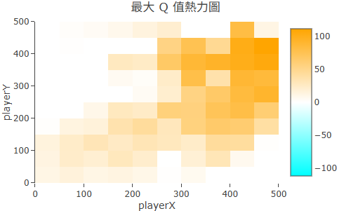
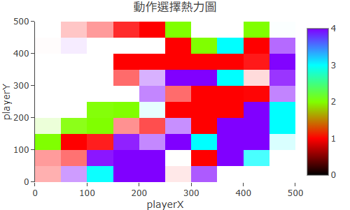
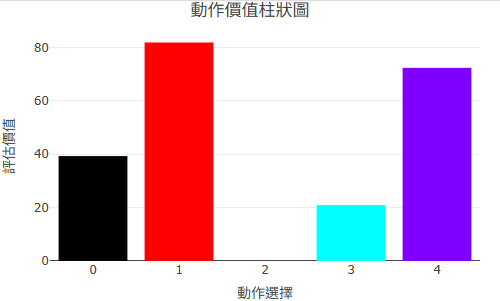
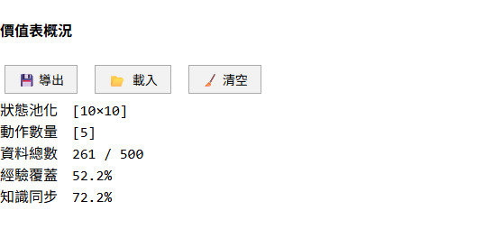

在 Q-Learning 裡，Agent 對世界的認識全部壓縮在一張表裡——Q-Table。這張表的每一個格子對應一個「狀態-動作對」，數字代表 Agent 預估：如果在這個狀態做這個動作，長期下來能拿到多少 Reward。
問題是，Q-Table 本身只是一堆數字，直接看沒有意義。RR 平台的視覺化模組把這張表轉換成四種不同角度的圖，讓你能夠直接「看進」Agent 的思考邏輯，診斷它學到什麼、哪裡還沒學好。
熱力圖是 Q-Table 的「俯瞰圖」，把每個狀態的最大 Q 值（max Q）用顏色深淺呈現在二維平面上。
| 軸向 | 代表什麼 |
|---|---|
| X 軸 | 某一個狀態維度（例如 Maze2D 中的橫向位置） |
| Y 軸 | 另一個狀態維度（例如縱向位置） |
| 格子顏色 | 該狀態的最大 Q 值：亮/暖色 = 高價值，暗/冷色 = 低價值或未探索 |
對於超過兩維的狀態空間（例如 CartPole 有 4 維），你可以透過 focusState 切片功能固定其中幾個維度的值，只看特定「切面」的 Q 值分佈。cutX 和 cutY 滑桿讓你指定想觀察哪兩個維度做為橫縱軸。
如何判讀收斂狀態：

收斂後的 Q-Table 熱力圖：終點附近高亮，路徑上形成漸層色帶
動作熱圖和 Q-Table 熱力圖使用同樣的座標系統，但每個格子的顏色改為代表 Agent 在該狀態最傾向選哪個動作，而不是 Q 值的大小。
RR 平台使用 8 色色環來對應動作索引（最多支援 8 個動作）：例如往右是某個顏色、往上是另一個顏色。整張圖看起來就像一個「策略地圖」。
如何判讀：

動作熱圖：每格顏色代表 Agent 最傾向的移動方向，整體指向終點
信心遮罩疊加在動作熱圖上，用白色半透明層標示 Agent 對每個狀態的「決策信心」：
最佳動作與第二佳動作的 Q 值差距很小——Agent 舉棋不定，這裡需要更多探索。
最佳動作遠勝其他選項——Agent 在這個狀態有明確策略，決策穩定可信。
信心遮罩最大的用途是找出「探索漏洞」——圖上大片白色的區域，就是 Agent 還沒充分學習的地方。如果那些區域正好在通往目標的路徑上，就需要調整訓練策略讓 Agent 多訪問那裡。
點擊熱力圖或動作熱圖上的任何一個格子，右側會出現該狀態的詳細資訊：
橫條圖，每一條對應一個可用動作，長度代表該動作的 Q 值大小。最長的那條就是 Agent 當前的最佳動作選擇。如果各條長度差不多，代表這個狀態的策略還沒確定。
選定某個動作後，折線圖顯示這個「狀態-動作對」的 Q 值隨訓練回合的變化過程。平穩收斂的折線代表學習穩定；震盪的折線代表這個狀態的更新不穩定，可能需要降低 α。

動作分布圖：點擊熱力圖某格後，顯示該狀態各動作的 Q 值比較
除了標準熱力圖，分析面板還提供兩種不同色階的視角：
| 圖表 | 色階 | 用途 |
|---|---|---|
| max Q 圖 | 青色 → 白色 → 橙色 | 找出高價值路徑——橙色區域是 Agent 認為最有機會獲得高 Reward 的地方 |
| min Q 圖 | 藍色 → 白色 → 紅色 | 找出危險區域——深藍區域是 Agent 認為最危險、最應該避免的狀態 |
兩張圖結合看，可以確認 Agent 的「心智地圖」是否和遊戲規則吻合：高價值區域在終點附近、低價值區域在懸崖或障礙物附近，代表學習方向正確。
當你啟用 DQN 模式時，平台同時運行 Q-Table 和一個神經網路。神經網路的任務是學習 Q-Table 的規律，並能在更複雜的狀態空間中推廣。
R² 同步率顯示神經網路對 Q-Table 的擬合程度，以百分比表示：
| R² 數值 | 意義 |
|---|---|
| 接近 100% | 神經網路已充分學到 Q-Table 的規律，DQN 與 Q-Table 策略高度一致 |
| 50%～80% | 神經網路正在學習中，已掌握主要規律但細節尚未完全同步 |
| 接近 0% 或負值 | 神經網路幾乎沒學到東西，或 Q-Table 本身還在早期震盪 |
R² 同步率和 Reward 曲線一起看最有意義：如果 Reward 曲線已收斂但 R² 還很低，代表神經網路需要更多蒸餾時間；如果兩者都高，代表 DQN 已成功從 Q-Table 汲取知識。

DQN 模式的分析面板：R² 同步率顯示神經網路對 Q-Table 的擬合程度